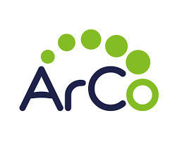
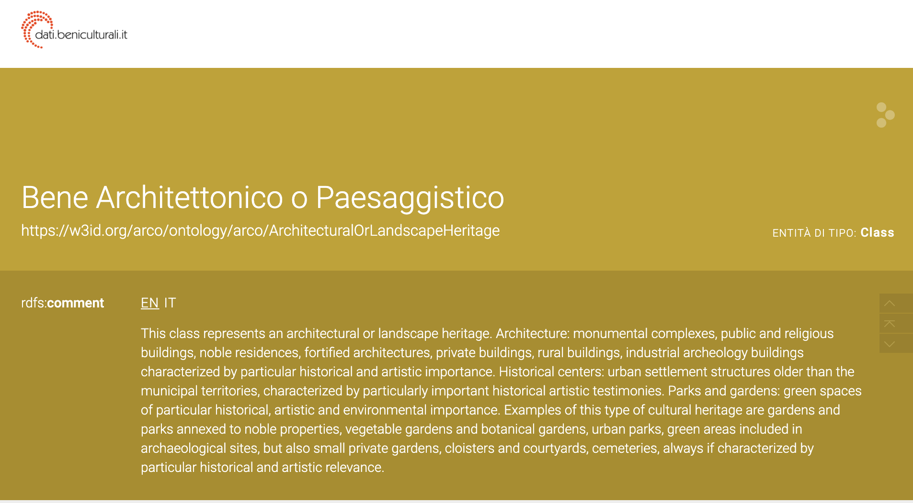

Overview
The aim of this project is to investigate the Italian architectural heritage.
The focus is on the figure of Frederick II, King of Sicily from 1198, King of Germany from 1212, King of Italy and Holy Roman Emperor from 1220 and King of Jerusalem from 1225. Frederick II built castles through the Holy Roman Empire, including Italy.
The main goal of the project is to create new RDF triples regarding the ArCo Ontology to enrich the ArCo Knowledge Graph.
What is ArCo
ArCo is the knowledge Graph of the Italian Cultural Heritage. It provides a structured and interconnected representation of Italy's vast cultural assets, including monuments, historical sites, and artifacts. By leveraging RDF (Resource Description Framework) triples and ontologies, ArCo enables the enrichment and querying of cultural heritage data, facilitating research, preservation, and public access to Italy's rich cultural history.
ArCo consists of 13 vocabularies describing the cultural heritage domain and data from the General Catalogue of the Italian Ministry of Cultural Heritage (MiC) published as RDF.
Visit ArCo
How to enrich ArCo
It is essential to identify, collect and map new data sources. The mapped data is converted into RDF triples, building block of a knowledge graph, consisting of subject-predicate-object expressions. These new triples are incorporated into the existing ArCo knowledge graph.
This projects builds new triples regarding the ArCo Ontology to enrich the ArCo knowledge graph with regard to:
- Depiction;
- Layout;
- Construction elements;
- Commissioner;
- Event or situation in time.
The fundamental class of the ArCo ontology explored in this project is the Architectural or Landscape Heritage class.
